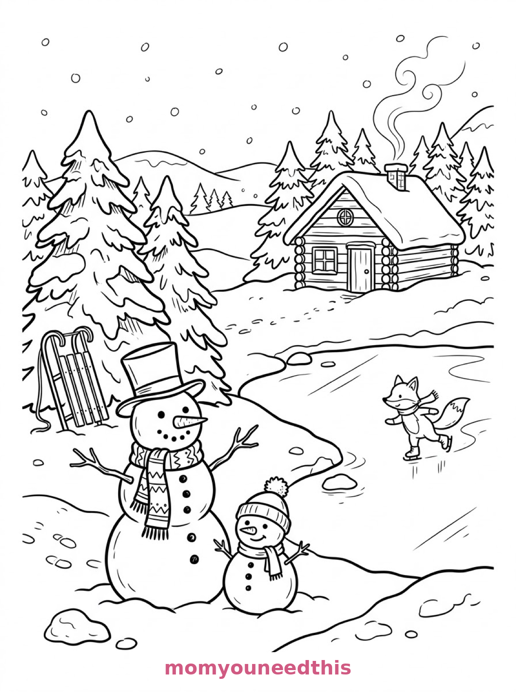
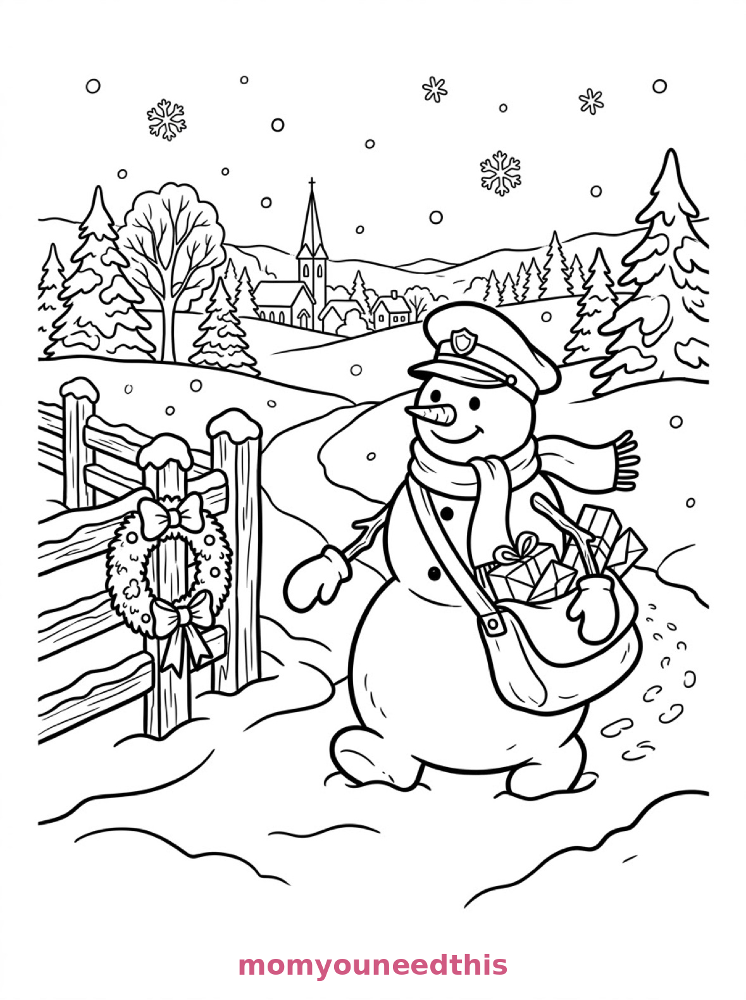

Free Snowman Coloring Pages Village, Pond & Postman Printables
These free snowman coloring pages bring three wintry friends to your table — a snowman in a village square, two snowmen by a frozen pond, and a snowman postman delivering parcels. Download the set below, print at home on letter-size paper, and let the coloring fun begin. No signup needed.
Last updated: October 23, 2026
Quick Answer
Yes — this page has three free printable snowman coloring pages: a snowman with a tall hat in a snowy village square, a tall and small snowman beside a frozen pond, and a snowman postman carrying a mailbag of parcels. Bold outlines and big spaces, made for little hands. Download, print on letter-size paper, and hand over the crayons — no signup, no cost.
At a Glance
- Ages: 3–8
- Pages: 3 free printables
- Format: Print at home, letter size
- Cost: Free, no signup
- Supplies: Crayons or markers
- Time: 10–20 minutes
⛄ Snowman in the Village Square Coloring Page

🎨 Download Your Free Village Snowman Coloring Page
A snowman wearing a knitted scarf and a tall hat stands in a snowy village square holding a broom, with a lamppost, a post box, cottage rooftops and a robin perched on one twig arm — bold outlines, big spaces, zero signup.
⬇️ Download Free Village Snowman Page 🖨️ Print Village Snowman Page🎁 Free printable for preschoolers & kids
🦊 Two Snowmen by the Frozen Pond Coloring Page

🎨 Download Your Free Pond Snowmen Coloring Page
Two snowmen, a tall one and a small one, stand beside a frozen pond where a fox skates, with snow-laden pines, a sled leaning against a tree and a cabin with smoke curling from its chimney — bold outlines, big spaces, zero signup.
⬇️ Download Free Pond Snowmen Page 🖨️ Print Pond Snowmen Page🎁 Free printable for preschoolers & kids
💌 Snowman Postman Coloring Page

🎨 Download Your Free Snowman Postman Coloring Page
A snowman postman carries a mailbag full of parcels along a snowy lane, passing a fence hung with a wreath, with footprints trailing behind him and a church spire rising above the trees — bold outlines, big spaces, zero signup.
⬇️ Download Free Snowman Postman Page 🖨️ Print Snowman Postman Page🎁 Free printable for preschoolers & kids
More Coloring Pages
Tap any picture to open its theme page and download the free printable.


⛄ How To Use This Page
- Browse the three designs and pick the snowman your child will love most.
- Tap download or print under that design — the file opens full-size, ready for letter-size paper.
- Print an extra copy of the village snowman — it is the fastest page in the set and perfect for a quick finish.
- Color together with crayons or markers, hot chocolate optional but encouraged.
❄️ Why Kids Love Snowman Coloring Pages
A snowman is the friendliest shape in winter: three big circles, a hat, a scarf, and a face a child can draw in their sleep. These pages put that friend in three full scenes — a village square, a skating pond, a delivery round — so every page spends time with the snowman, not just the idea of one.
Snowman pages also teach the happiest coloring trick in winter: white space. The snowman's body mostly stays white, so kids learn to build the picture by coloring everything around him — the scarf blazing red, the sky deep blue — and watching him appear. It is the closest thing coloring has to building a snowman yourself, without the cold fingers, the wet mittens or the melting afterward.
☃️ Meet the Three Snowman Scenes on This Page
The village snowman. A snowman wearing a knitted scarf and a tall hat stands in a snowy village square, holding a broom, with a lamppost, a post box and cottage rooftops behind him and a robin perched on one twig arm. He is the classic page in the set: three round sections, a patterned scarf to decorate, and one sweet little bird to spot.
The two snowmen by the pond. Two snowmen, a tall one and a small one, stand beside a frozen pond where a fox skates in the distance, with snow-laden pine trees, a wooden sled leaning against a tree and a cabin with smoke curling from its chimney. It is the most story-filled page in the set — a parent snowman and a kid snowman, watching the fox show off.
The snowman postman. A snowman postman carries a mailbag full of parcels along a snowy lane, passing a fence hung with a wreath, with footprints trailing behind him and a church spire rising above the trees. It is the most charming page in the set — every parcel in that bag is a tiny design decision waiting to happen.
✏️ Snowman Coloring Tips
- Leave the snowman white — mostly. A light blue or gray shadow down one side is all it takes; the scarf and hat do the colorful work.
- Pattern the scarf. Stripes, checks, dots — the knitted scarf is the detail spot on the village snowman, made for two alternating colors.
- Go warm around the cold. Yellow cottage windows, red post box, orange robin — warm colors against white snow make the whole scene glow.
- Color the parcels differently. Every parcel in the postman's bag gets its own color — it is a built-in counting game, too.
⛄ Coloring Pages for Different Ages
For ages 3 to 4, start with the village snowman. Three big round sections, a hat and a scarf are all a little colorer needs to feel finished.
For ages 5 to 6, the two pond snowmen are the sweet spot. The pond, the sled and the cabin give clear, satisfying shapes, and the skating fox is a small delight to find.
For ages 7 to 8, hand over the snowman postman. The parcels, the footprints, the wreath and the village skyline reward slow, careful coloring — it makes a lovely winter card front, too.
☕ More Snowman Fun After Coloring
Turn the postman page into mail: write a real thank-you note or drawing on the back, fold it, and let your child “deliver” it to a family member's bedroom door. The coloring page becomes the envelope art.
For the full winter set, the winter coloring pages bring a sledding hill and an ice-skating pond — and the snowflake coloring pages finish the season with three giant flakes to pattern and decorate.
🔗 More Free Printables You’ll Love
- Free Winter Coloring Pages A snowman, a sledding hill and an ice-skating pond to color.
- Free Christmas Coloring Pages Trees, ornaments and Santa scenes to print and color.
- Free Snowflake Coloring Pages Three giant snowflakes to pattern, decorate and color.
- All Free Coloring Pages Browse every free coloring page on the site, organized by theme.
❓ Snowman Coloring Pages FAQ
Are these snowman coloring pages really free?
Yes — all three designs on this page are free original printables from MomYouNeedThis. Download them, print them at home, and color — no signup and no cost.
What ages are these coloring pages best for?
Kids ages 3 to 8 get the most from this set. The village snowman is the gentlest start for younger children, while the pond and postman scenes have the detail older kids enjoy.
How do I print a coloring page?
Tap the download button under the design you want, then print the file on regular letter-size paper. The print button opens the full-size page in a new tab if you prefer to print from there.
Is the snowman on the winter coloring pages the same one?
No — the winter coloring pages have their own snowman (a smiling snowman holding a lantern in a pine forest). The three snowmen on this page — the village snowman, the pond pair and the postman — are different designs, made to sit alongside the winter set.
Can I make a snowman coloring book from these pages?
Yes — print all three designs, stack them in order, and staple along the left edge. Add a cover sheet with your child's name for a finished homemade snowman coloring book.